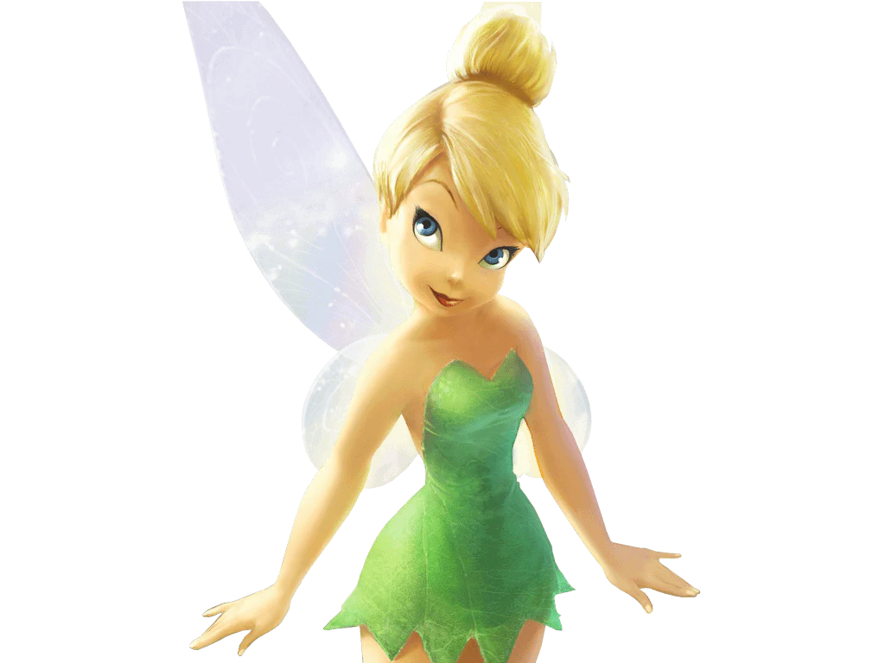

Tinker Bell
Tinker Bell, ou Sininho, é a fada mais icônica da Disney. Inventiva, curiosa e determinada, ela é conhecida por seu espírito aventureiro e por sempre encontrar uma solução criativa para os problemas.
Características da Tinker Bell
Fada dos Reparos
Especialista em consertos, ela adora criar engenhocas e resolver problemas mecânicos.
Determinação
Sininho é teimosa e muito determinada, não desiste fácil de seus objetivos.
Espírito Curioso
Ela vive explorando além do que é permitido para as fadas, o que a leva a grandes descobertas.
Curiosidades
- Tinker Bell foi introduzida originalmente em "Peter Pan" de 1953.
- Ela tem sua própria série de filmes no universo Disney Fadas.
- A cor predominante de suas roupas é verde, representando sua personalidade vibrante e natureza.